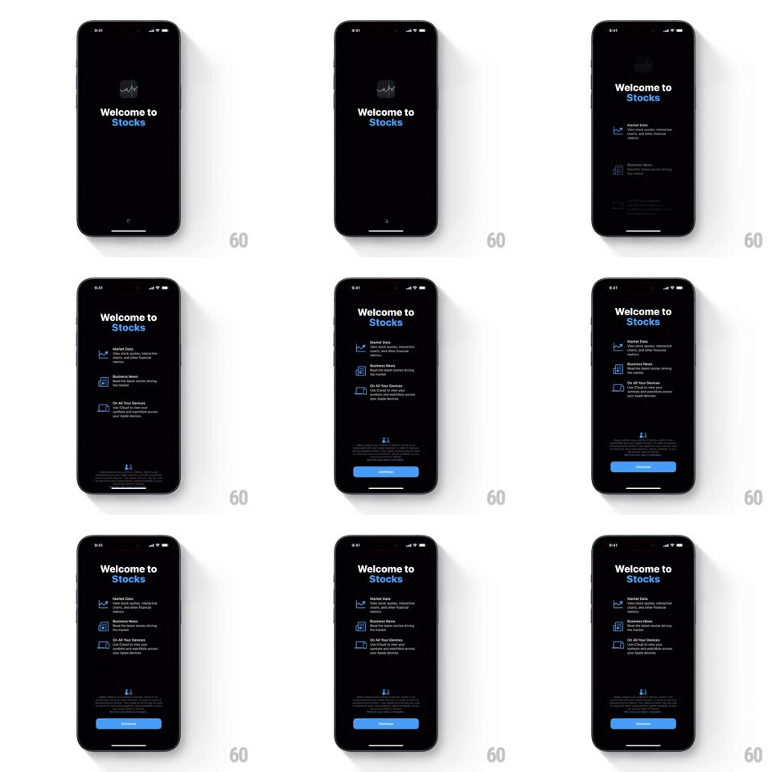

Media
Frame-by-frame

Rebuild this interaction 1:1: the Apple Stocks welcome screen's value-prop entrance - under "Welcome to Stocks", three feature rows (Market Data, Business News, On All Your Devices) slide in from the right and fade up in a staggered sequence, followed by the disclaimer and the blue Continue button.

Rebuild this interaction 1:1: the Apple Stocks welcome screen's value-prop entrance - under "Welcome to Stocks", three feature rows (Market Data, Business News, On All Your Devices) slide in from the right and fade up in a staggered sequence, followed by the disclaimer and the blue Continue button. ## Integration Integration: stack-agnostic spec - springs given as stiffness/damping, timed motions as duration + curve; map every value to your framework and animation library of choice. ## Scene Black onboarding screen: Stocks icon, "Welcome to Stocks" title, three rows each with a blue icon, bold feature name, and two-line description; a privacy disclaimer and a blue Continue button at the bottom. ## Motion spec Pattern: staggered slide-in list reveal. - Title settles first (already on screen or a quick 300ms fade). - Row 1 (Market Data) slides in from the right (~60px) while fading in (350ms, ease-out); rows 2 and 3 follow at ~150ms intervals with the same motion. - The disclaimer paragraph fades in (300ms) after the last row lands. - The Continue button rises slightly (~16px) and fades in last (300ms), completing the screen. ## Calibration - All rows share the same motion curve - only their start offsets differ. - Icons are thin blue line glyphs; they arrive with their row, not separately. ## Reduced motion All elements fade in place (200ms, staggered 80ms); no horizontal travel. ## Don't miss - The stagger is the whole point - rows never move as a block. - The button is the last thing to appear, anchoring the eye at the bottom.